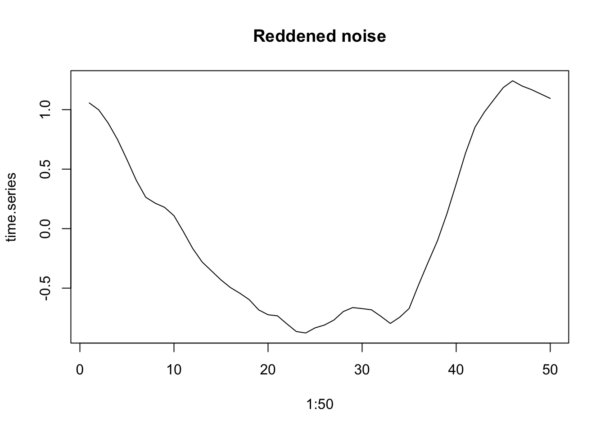
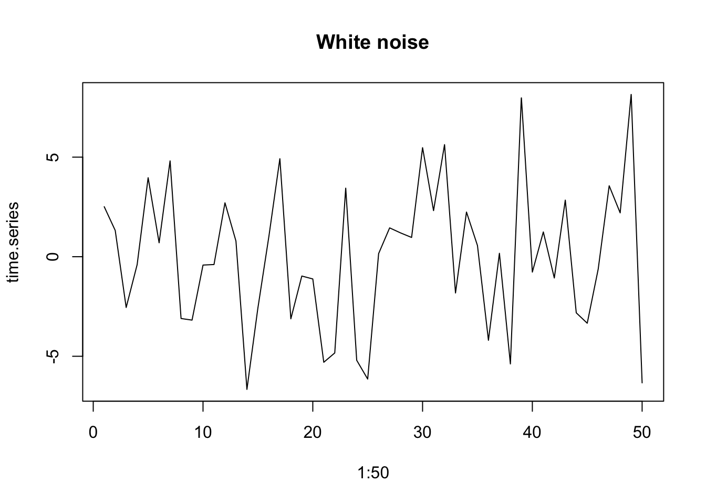

3 Simple density-independent growth

Figure 3.1: Song Sparrow (Melospiza melodia) counts in Darrtown, OH, USA. From Sauer, J. R., J.E. Hines, and J. Fallon. 2005. The North American Breeding Bird Survey, Results and Analysis 1966–2004. Version 2005.2. USGS Patuxent Wildlife Research Center, Laurel, MD.

Figure 3.2: Song Sparrow (Melospiza melodia) annual changes in population size as a function of population size.
Between 1966 and 1971, Song Sparrow (Melospiza melodia) abundance in Darrtown, OH, USA, seemed to increase very quickly, perhaps unimpeded by any particular factor (Fig. 3.1, 3.2). In an effort to manage this population, we may want to predict its future population size. We may also want to describe its growth rate and population size in terms of mechanisms that could influence its growth rate. We may want to compare its growth and relevant mechanisms to those of other Song Sparrow populations or to other passerine populations. To do this, we start with the simplest of all population phenomena, geometric and exponential growth.
Geometric and exponential growth are examples of density-independent growth. This captures the fundamental process of reproduction (e.g., making seeds or babies) results in a geometric series.13 For instance, one cell divides to make two, those two cells each divide to make four, and so on, where reproduction for each cell results in two cells, regardless of how many other cells are in the population—that is what we mean by density-independent. This myopically observed event of reproduction, whether one cell into two, or one plant producing many seeds, is the genesis of a geometric series. Therefore, most models of populations include this fundamental process of geometric increase. Second, populations can grow in a density-independent fashion when resources are plentiful. It behooves us to start with this simple model because most, more complex population models include this process.
A. Hastings (2011) proposes that we can approach single species poulation growth from either a microscopic or macroscopic point of view. The microscopic approach begins with two propositions. The first is that if we know the location, timing, and traits of all individuals, we can predict perfectly population dynamics; the second is that we can never predict dynamics perfectly because births and deaths are fundamentally random and can be described only with probabilities.14 With this microscopic approach, we would seek a very detailed description of individuals and build a complex model to understand the consequences of the characteristics of all these interacting individuals, including the growth of the population.
In this chapter, I choose to start with Hastings’ macroscopic approach. These propositions appear simpler.
- A population grows exponentially in the absence of other forces.
- There are forces that can prevent a population from growing exponentially.
These are the consequences of the following assumptions.
- all individuals in a population are identical.
- there is no migration in or out of the population.
- the number of offspring per individual (or the per capita birth and death rates) are constant through time, and (ii) independent of the number of individuals in the population.
Deviations from these assumptions lead to all of the most interesting parts of single species population dynamics (A. Hastings 2011). The only deviation we play with in this chapter concerns assumption c; we model stochastic variation in population growth rate to investigate extinction risk. It is also worth mentioning that, although propositions 1 and 2 follow from assumptions a-d, they are not strictly necessary (A. Hastings 2011). For instance, individuals need not be identical, and we deal with a big exception in the next chapter where we introduce structured population growth. Also, migration is admissable, provided immigration = emigration and it does not alter growth rates. Nonetheless, other deviations from a. and b. can have very important consequences for single species population dynamics.
Here we define Density-independence in a real population as a lack of a statistical relation between the density of a population, and its per capita growth rate15. The power to detect a significant relation between any two continuous variables depends on those factors which govern statistical power, such as the number of observations, the range of the predictor variable, and the strength of the underlying relation. Therefore, our conclusion, that a particular population exhibits density-independent growth, may be trivial if our sample size is small, with few generations sampled, or if we sampled the population over a very narrow range of densities. Nonetheless, it behooves us to come back to this definition if, or when, we get caught up in the biology of a particular organism.
In this chapter, we’ll introduce density-independent population projection, growth, and per capita growth, for populations with synchronous reproduction (discrete models), and continuous reproduction (continuous models).
3.1 Discrete growth rates of fruit flies in my kitchen
Summertime, and the living is easy. Fruit flies in my kitchen, and their number’s quite high. Flies love my ripe fruit, and my red wine. They drown in the wine–I am not sure if that is good or bad.
For now, we’ll treat fruit flies as if they grow in discrete generations. This is very common for populatilons that live in seasonal habitats - their reproduction is timed to the season, and they breed altogether in one bout.16
I count the number of flies every week, and I find these numbers:
t <- c(0, 1, 2, 3)
N <- c(2, 4, 8, 16)
qplot(x=t, y=N, geom=c("line", "point") )
There are several ways we can describe fruit fly population growth. We begin by thinking about the proximate causes of change to population size per unit time: births, immigration, death and emigration (Fig. 3.3). Those are the only options, and we state it thus: \[\frac{\Delta N}{\Delta t} = \frac{B + I - D - E}{\Delta t}\] that is, the pop growthe rate17 is determined by the numbers of births, deaths, and migrants per unit time.
Over the past month, I suspect the fruit flies are increasing primarily through reproduction in my kitchen. Clearly, at some point in the past, a fly or two (or three) must have immigrated into my kitchen, either as adults or as eggs or larvae in fruit I brought home (\(I>0\)). For now, I will assume fruit fly population dynamics in my kitchen are governed by only births and deaths (\(I=E=0\)), so, we have \[ \frac{N_{t+1} - N_t}{(t+1) - t}=\frac{\Delta N}{\Delta t}=\frac{B+D}{\Delta t}\] In this equation, \(t\) has a particular time unit, one week, so \(t+1\) is one additional week. We refer to a population like this as closed, because it is closed to migration in or out.

Figure 3.3: The number of fruit flies in my kitchen depends on immigration and emigration, and births and deaths. In the text, we assume that immigration and emigration are zero. All rates are individuals per unit time.
I would like to represent births and deaths as proportions of existing adults. that is, as \[B = bN;\quad D=dN\] This reflects the biological realities that adults produce offspring, and everyone has some chance of dying. The parameter \(b\) could be any positive real number, \(b \ge 0\). This model of births reflects the geometric property of reproduction: over a specified time interval \(\Delta t\), an average parent makes \(b\) babies. Parameter \(d\) is any real number between zero and one, \(0 \le d \le 1\). Both \(b\) and \(d\) have units of individuals per individual per unit time. They depend on that unit of time.
What if offspring die before the next census?
Fig. 3.3 helps us think about these things. Simplifying, we’ll assume births occur first, and then death comes to offspring and adults.
Let’s define a few terms.
- \(N_0\), \(N_1\) - the number of flies at the start and after the first time interval.
- \(N^\prime\), \(N^{\prime\prime}\) - distinct values of \(N\), just after births.
- \(\Delta N\) - the change in \(N\) from one point in time to another.
- \(t\) is time, so \(\Delta t\) is the time interval over which \(N\) may change.
Let’s match these numbers to what is going on in my kitchen. For my first census count, \(t=0\), I counted the adults and label that number \(N_0\). These adults lay eggs which hatch, larvae and pupae develop, and become adults, giving us a population of \(N^\prime = N_0 + bN\)
Some of the eggs fail to hatch, and some of the larvae die before maturing. Many of the adults die as well. If we assume the eggs, larvae, and adults all die at the same rate, then by the end of one generation we have \(N_1 = dN^\prime = d(N_0 + bN)\).
Substituting and multiplying we get \[ N_1 = N_0 + bN_0 - d\left(N_0 + bN_0\right)\]
We see that by the next time point, \(t=1\), the number of fruit flies should be equal to the number we started with, \(N_0\), plus the number of new individuals, \(bN_0\), minus the number of original adults that die, \(dN_0\), and minus the number of new individuals that die, \(dbN_0\).
We can pull all of these parameters together, \[ N_1 = N_0 + bN_0 - dN_0 - dbN_0 \] \[ N_1 - N_0 = N_0 \left(b - d - db\right) = N_0 + r_dN_0 \tag{3.1}\]
where \(r_d = b - d - db\).
The growth rate of the population is \(\Delta N / \Delta t\), or, at \(t=0\), is \[\frac{\Delta N}{\Delta t} = \frac{N_1 - N_0}{t_1-t_0} = \frac{(N_0 + r_dN_0) - N_0}{t_1-t_0} = r_d N_0 \] If we generalize, we drop the zero, to get \(r_dN\). The per capita population growth rate is \(r_dN/N =r_d\)). If our time step were something other than 1, we would also divide by \(\Delta t\).
With the simple census data above, we can estimate \(r_d\) for the first time step. \[N_1 = N_0 + r_dN_0= 2 + r_d (2) \implies r_d=1\] If we know that \(r_d\) is constant over time, we can infer a general rule to project the population forward in time an arbitrary number of time steps. We will let \(\lambda = 1+r_d\). \[N_1 = N_0 + r_dN_0 = N_0(1 + r_d) = N_0\lambda\] \[N_2 = N_1\lambda= (N_0 \lambda)\lambda\] \[N_3 = N_2\lambda= (N_0 \lambda)\lambda\lambda\] or simply, \[N_t = N_0\lambda^t\]
To summarize our model of discrete population growth, we have the following statements:
Projection: \[N_t = N_0\lambda^t\]
Population growth rate: \[\frac{\Delta N}{\Delta t} = r_dN; \quad \mathrm{where~} \lambda=1+r_d\]
Per capita opulation growth rate: \[\frac{\Delta N}{N\Delta t} = r_d\]
At last, we see how this is a model of density-independent growth: per capita growth rate does not include \(N\).
3.2 Fruit flies with continuous overlapping generations
In the reality that is my kitchen, individual fruit flies are having sex and reproducing on their own schedules. As a population, they breed continuously, so the cohorts re not synchronous. For populations like that, we need to describe instantaneous growth rates, where \(\Delta t\) is no longer a fixed period of time, but is an instant, or infinity small.
We return to our example above (Fig. 3.3), which we summarize in (3.1). Please take a look at that equation; here we make time explicit so that it appears in the equation. We begin by remembering that \(b\) and \(d\) have time units.
- Let \(\Delta t\) be a small fraction of \(t\), so that the time step goes from \(t\) to \(t + \Delta t\).
- As \(\Delta t \rightarrow 0\), \(b\) and \(d\) need to shrink as well, to \(\Delta t b\) and \(\Delta t d\).
- \(dN/dt\) is how we identify the differential equation that is the instantaneous rate of population growth, with lower case \(d\) symbolizing infinitesimally small change.
We now have to solve for the limit of \(\Delta N /\Delta t\) as \(\Delta t\) goes to zero. \[\frac{dN}{dt}=\lim_{\Delta t \rightarrow 0} \frac{N_{t+\Delta t} - N_t}{\Delta t} = \lim_{\Delta t \rightarrow 0} \frac{\Delta t\,bN_t - \Delta t \,dN_t - \Delta t\, d (\Delta t\, b)N_t}{\Delta t} \] If we divide through by \(\Delta t\) and then let \(\Delta t \rightarrow 0\), we get \[\frac{dN}{dt}=\lim_{\Delta t \rightarrow 0} bN_t - dN_t - \Delta t\, d bN_t = bN_t - dN_t=rN\]
To arrive at the projection equation for a continuously growing population, we integrate \(rN\) with respect to time. Integration is the cumulative summing of \(y\) across a range of \(x\). It even uses an exagerated “S” to indicate summation, \(\int\). Here we integrate population growth across time. We start by rearranging \[\frac{dN}{dt} = rN \Rightarrow \frac{dN}{N} = r dt\]
Now we integrate \(N\) and \(r\) with respect to their start and end points: \(N\) from \(N_0\) to \(N_t\), and, correspondingly, \(r\) from \(t=0\) to \(t=t\), \[\int_{N_0}^{N_t} \frac{1}{N}dN = \int_{0}^{t}rdt\] \[\ln(N_t) - \ln(N_0) = rt - r\,0\] \[\ln(N_t) = \ln(N_0) + rt\] We now exponentiate (\(e^x\)) both sides to arrive at our projection equation. \[N_t = e^{\ln(N_0) + rt} = N_0 e^{rt}\]
To summarize our model of continuous population growth, we have the following statements.
Projection: \[N_t = N_0 e^{rt}\]
Population growth rate: \[\frac{dN}{dt} = rN\]
Per capita population growth rate: \[\frac{dN}{Ndt} = r\] Once again, we see why we refer to exponential growth as density-independent: the per capita growth rate does not depend on \(N\).
3.3 Properties of geometric and exponential growth
Compare the projection equations for geometric and exponential growth. We find that \[\lambda = e^{r} \quad ; \quad \ln \lambda = r\] This gives us a few useful rules of thumb.
- No change: \(r = 0\quad;\quad\lambda =1\)
- Growing population: \(r > 0 \quad;\quad \lambda > 1\)
- Shrinking population: \(r < 0 \quad;\quad \lambda < 1\)
# Let r take on three values
r <- c( -1, 0, 1)
# Convert to lambda
exp(r)## [1] 0.3678794 1.0000000 2.7182818Time scaling This is a useful property if we ever want to change time units in a discrete model. We must first \(\lambda\) to \(r\), change units in \(r\) and convert back to \(\lambda\). For instance, if we find that the annual finite rate of increase for a population of crickets is \(\lambda = 1.2\), we cannot convert that to a monthly rate of \(1.2/12 = 0.1\). Instead we convert to \(r\) and back to \(\lambda\).
lambda <- 1.2
# Convert lambda to r
r <- log(lambda); r## [1] 0.1823216# Scale r from year to month
r2 <- r/12; r2## [1] 0.01519346# Convert back to lambda (per month)
lambda2 <- exp(r2); lambda2## [1] 1.015309This is very, very different than \(\lambda/12\).
Doubling time Sometimes we gain a more intuitive grasp of an idea when we convert to a different form of the same relationship. Exponential growth is one of those ideas that can be hard to grasp. A more intuitive way to compare or express exponential grwoth rate is through doubling time, the time required for the population to double in size. For instance, a per capita growth rate of \(r = 0.14\,\mathrm{inds}\cdot \mathrm{ind}^{-1} \mathrm{y}^{-1}\) means that the population will double in less than 5 years.
We determine this by letting \(N_t = 2N_0\). \[2N_0 = N_0 e^{rt}\] \[\ln 2 = rt\] \[t =\frac{\ln 2}{r}\]
# let r be a sequence from
r <- c(0.01, 0.05, 0.1, 0.5)
#doubling time will be
log(2)/r## [1] 69.314718 13.862944 6.931472 1.386294# and a picture
par(mgp=c(1.2, .2, 0), mar=c(2, 2, 1, 1), tcl=-.2)
curve( log(2)/x, xlab="r", ylab="Doubling time")
Figure 3.4: Doubling time is inversely related to the intrinsic rate of increase, r.
3.3.1 Average growth rate
In any real data set, such as from a real population of fruit flies or Song Sparrows, \(N_{t+1}/N_t\) will vary from year to year. How do we calculate an average growth rate for a fluctuating population?
Let’s consider the case where a population increases and then decreases. For each year, we will calculate the annual rate of increase \(R = N_{t+1}/N_t\), and take the arithmetic average of those rates to see if it makes sense.
N <- c(20, 30, 15, 15)
R <- N[2:4]/N[1:3]; R## [1] 1.5 0.5 1.0The arithmetic average of those rates is \((1.5 + 0.5 + 1.0)/3=1.0\). If \(R=1.0\), then, on average, the population should stay the same, but it decreased. Why is that?
Let us do the annual time steps explicitly to see what is going on. \[N_3 = (N_0 R_0) R_1 R_2\]
# Remember that we call the first time t=0 and N0, but
# when coding, these values are the first in a series, so
# N0 is N[1]
# Now we do the annual changes which should equal N3
N[1]*R[1]*R[2]*R[3]## [1] 15From this calculation, we see that when we start with \(N_0=20\) and do the annaul steps, we wind up with a smaller population, even though the arithmetic average is \(R_{\mathrm{ave}} = 1\). How do we calculate an average of numbers that we multiply together?
We want a number \(\bar{R}\) such that \[\bar{R}^t = R_1R_2\ldots R_t\]
To find that, we simply solve for \(\bar{R}\) \[(\bar{R}^t)^{1/t} =\bar{R} = \left(R_1R_2\ldots R_t\right)^{1/t}\] We take the \(t\)-th root of the product of all the \(R\). This is called the geometric average. Another way of writing this would be to use the product symbol, as in \[\bar{R} = \left(\prod_{i=1}^t R_i\right)^{1/t}\]
R## [1] 1.5 0.5 1.0#arithmetic average
mean(R)## [1] 1# geometric average
t <- length(R); t## [1] 3prod(R)^(1/t)## [1] 0.9085603# shows the population should declineAnother way to do the same thing is to take the arithmethic mean of the log-growth rates, and back-transform,
exp( mean( log(R) ) )## [1] 0.9085603Now we see the effect of calculating the average growth rate correctly. This leads to a useful rule of thumb: random variation in growth rate suppresses population growth. Here we illustrate that. We start with a growing population.
lambda <- 1.01 # positive growth rate
N0 <- 100 # starting N
t <- 20 # 20 years
Nt1 <- N0*lambda^t; Nt1## [1] 122.019Here \(\lambda > 1\), so the population grows.
Now we do a simulation in which we let \(\lambda\) have a mean of 1.01 but allow it to vary randomly.
# create a vector to hold all N
N <- rep(0, t); N[1] <- N0
# create t-1 random lambdas with a mean of 1.01
# ranging from 0.41 to 1.61
set.seed(3) # makes the radnom sequence repeatable
random.lambda <- runif(n=(t-1), min=0.41, max=1.61)
# the geometric mean
prod(random.lambda)^(1/length(random.lambda))## [1] 1.00105# actual simulated projection
for(i in 1:(t-1)) {
N[i+1] <- N[i] * random.lambda[i]
}
qplot(x=0:(t-1), N, geom=c("line", "point"), xlab="Time (y)")
Figure 3.5: Random variation in growth rate alters the long term average growth rate.
Sometimes the arithmetic average is close to the correct average, but it is never the correct approach.
3.4 Modeling with Data: Simulated Dynamics
Science strives to make predictions about about the behavior of systems. Ecologists and conservation biologists frequently strive to predict the fate of populations. This is referred to as population viability analysis (PVA) and is a large field of endeavor that is vital to managing threatened populations. Here we put into practice ideas about population biology to make informed predictions about the fate of the Song Sparrow population in Darrtown, OH. We also illustrate simple computational methods for doing so.
The preceding sections (the bulk of the chapter) emphasized understanding the deterministic underpinnings of simple forms of density independent growth: geometric and exponential growth. This section explores the stochastic simulation of density independent growth. Our simulation makes most of the same assumptions we made at the beginning of the chapter. In addition, we assume that the observed annual growth rates (\(N_{t+1}/N_t\)) are representative of future growth rates, and that the growth rate in one year is entirely independent of any other year.
To make meaning full projections of future population size, we should quantify the uncertainty with our guess. Simulation is one way we can project populations and quantify the uncertainty. The way one often does that is to use the original data and sample it randomly to calculate model parameters. This way, the simulations are random, but based on our best available knowldge, i.e., the real data. The re-use of observed data occurs in many guises, and it is known often as bootstrapping or resampling.
In a highly influential paper on miminmum population sizes in conservation, Shaffer (1981) identifies four different types of noise or stochasticity that are important in driving variability in populations. The first of these is demographic stochasticity. This is the random or more correctly stochastic nature of individual births and deaths. Due to this element of random chance, individuals may live or die, produce offspring or not. As a result, population size will fluctuation randomly. This is very important in small populations, and becomes increasingly unimportant in larger and larger populations. This is the same process that underlies genetic drift in small populations.
Another source of variation Shaffer (1981) identifies is environmental stochasticity. This is temporal variation in birth or death rates that affects all individuals to a similar degree, due to variation in the population’s biotic or abiotic environment.
The last sources of variation are genetic stochasticity and natural catastrophes. Perhaps the latter of these is the most difficult to deal with, because catastrophes are, by definition, enormously consequential and unpredictable.
Given these sources of uncertainty, Shaffer (1981) defines minimum population size (MVP) thus,
“A minimum viable population for any given species in any given habitat is the smallest isolated population having a 99% chance of remaining extant for 1000 y despite foreseeable effects of demographic, environmental and genetic stochasticity, and natural catastrophes.”
In our simulations, we take one approach to simulating a population of Song Sparrows. The computational approaches includes a variety of tricks that you could use in a more serious approach to population projection and determining probabilities of extinction. In their supplemental documentation, Chaudhary and Oli (2019) provide an excellent list of criteria to evaluate your own or someone else’s approach to PVA.
3.4.1 Data-based approaches
We could use the observed changes in population counts \(R_t=N_{t+1}/N_t\) as our data. We would then draw an \(R_t\) at random from among the many observed values, and project the population one year forward. We then repeat this into the future, say, for ten years. Each simulation of a ten year period will result in a different ten year trajectory because we draw \(R_t\) at random from among the observed \(R_t\). However, if we do many such simulations, we will have a distribution of outcomes that we can describe with simple statistics (e.g., median, mean, quantiles).
A different approach would be to estimate the individual probabilities of births and deaths in the entire Darrtown population, and use those probabilities and birth rates to simulate the entire population into the future. In such an individual-based simulation, we would simulate the fates of individuals, keeping track of all individual births and deaths.
There are myriad other approaches, but these give you a taste of what might be possible. In this section we focus on the first of these alternatives, in which we use observed \(R_t\) to simulate the dynamics of Song Sparrow counts. Do do so, in part, because we have those data, while we do not have any estimates of birth rates or death rates.
Here we investigate Song Sparrow (Melospize melodia) dynamics using data from the annual U.S. Breeding Bird Survey (http://www.mbr-pwrc.usgs.gov/ bbs/). Below we will
- create and examine visually the data (annual \(R\)’s),
- simulate one projection,
- scale up to multiple simulations,
- simplify simulations and perform them 1000s of times, and
- analyze the output.
3.4.2 Creating and visualizing the data
Let’s start by graphing the data18. Graphing the data is always a good idea — it is a principle of working with data. We first load the data from the primer R package, and look at the names of the data frame. We then choose to attach the data frame, because it makes the code easier to read.19
library(primer)
data(sparrows)
names(sparrows)## [1] "Year" "Count" "ObserverNumber"attach(sparrows)Now we plot these counts through time (Fig. 3.6).
ggplot(data=sparrows, aes(x=Year, y=Count)) + geom_line() + geom_point(pch=1)
Figure 3.6: Observations of Song Sparrows in Darrtown, OH (http://www.mbr-pwrc.usgs.gov/bbs/).
We see that Song Sparrow counts at this site (the DARRTOWN transect, OH, USA) fluctuated a fair bit between 1966 and 2003. They never were completely absent and never exceeded \(\sim 120\) individuals.
Next we calculate annual \(R_t=N_{t+1}/N_t\), that is, the observed growth rate for each year \(t\).
# the use of [-1[ in the index tells R to exclude the first element.
# length() is the length of a vector, so [-length(X)] means exclude the last
obs.R <- Count[-1]/Count[-length(Count)]Thus our data are the observed \(R_t\), not the counts per se. These \(R\) form the basis of everything else we do. Because they are so important, let’s plot these as well. Let’s also indicate \(R=1\) with a horizontal dotted line as a visual cue for zero population growth. Note that we exclude the last year because each \(R_t\) is associated with \(N_t\) rather than \(N_{t+1}\).
qplot(x=Year[-length(Count)], y=obs.R, geom="point") + geom_hline(yintercept=1, lty=3) +
labs(y=bquote(N[t+1]/N[t]), x="Year (t)")![Annual growth rates (R=N[t+1]/N[t]) for Song Sparrows](figs/Rrates-1.png)
Figure 3.7: Annual growth rates (R=N[t+1]/N[t]) for Song Sparrows
One thing that emerges in our graphic data display (Fig. 3.7) is we have an unusually high growth rate in the early 1990’s, with the rest of the data clustered around 0.5–1.5. We may want to remember that.
3.4.3 One simulation
Our simulation will,
- determine the number of years we wish to simulate,
- create an empty vector,
N, to hold our simulated \(N\), which isyears + 1long, - draw a random sample of \(R_t\), one for each year (
R), - select a starting abundance \(N_0\) and put it in
N[1]. - multiply our first random \(R\),
R[1], timesN[1]to generate the next,N[2]. - repeat step 5 for each year to simulate each
N[t+1]fromR[t]andN[t].
First, we decide how many years we want to simulate growth, and create an empty vector that will hold our data.
years <- 10
N <-numeric(years+1) # rep(0,years+1) would do the same thing.Our vector of \(N\) has to be one longer than the number of \(R\) we use. This is because each \(R\) is sthe change from one year to the next and there will always be one more next than there is \(R\).
Next we draw 10 \(R\) at random with replacement. This is just like having all 35 observed \(R\) written down on slips of paper and dropped into a paper bag. We then draw one slip of paper out of the bag, write the number down, and put the slip of paper back in the bag, and then repeat this 9 more times. This is resampling with replacement. In that case, we would be assuming that all of these \(R_t\) are important and will occur at some point, but we just don’t know when—they constitute the entire universe of possiblities. The R function sample will do this. [A random process occurs only in our imagination, or perhaps at the quantum level.20 A stochastic process is one which we treat operationally as random while acknowledging that there are complex underlying deterministic drivers. A pseudorandom process is a completely deterministic and hidden process used by computers and their programmers to generate numbers that cannot be distinguished from random; we can repeat a pseudorandom process by stipulating a key hidden starting point.]
We can use set.seed() to make your pseudorandom process the same as mine, i.e., repeatable.
set.seed(3)
# Draw a sample of our observed R with replacement, "years" times.
(rRs <- sample(x=obs.R, size=years, replace = TRUE))## [1] 1.4489796 0.8125000 1.0714286 1.2857143 0.7727273 0.4805195 1.2857143
## [8] 1.0500000 0.7204301 1.4489796Now that we have these 10 \(R\), all we have to do is use them to generate the population sizes through time. For this, we need to use what programmers call a for-loop. In brief, a for-loop repeats a series of steps for a predetermined number of times.
Let’s start our simulated N with the sparrow count we had in the last year.
N[1] <- Count[length(Count)]Now we are ready to use the for-loop to project the population. For each year \(t\), we multiply \(N_t\) by the randomly selected \(R_t\) to get \(N_{t+1}\) and put it into the \(t +1\) element of N.
for( t in 1:years) {
# starting with year = 1, and for each subsequent year, do...
N[t+1] <- N[t] * rRs[t]
}Let’s graph the result.
qplot(0:years, N, geom=c("point","line"))
Figure 3.8: A single simulated population projection.
It appears to work (Fig. 3.8). Let’s review what we have done. We
had a bird count each year for 36 years. From this we calculated 35 \(R\) (for all years except the very last). decided how many years we wanted to project the population (10,y). * drew at random and with replacement the observed \(R\)—one \(R\) for each year we want to project forward. * we created an empty vector and put in an initial value (the last year’s real data). * performed each year’s calculation, and put it into the vector we made.
So what does Fig. 3.8 represent? It represents one possible outcome of a trajectory, if we assume that \(R\) has an equal probability of being any of the observed \(R_t\). This particular trajectory is very unlikely, because it would require one particular sequence of randomly selected \(R\)s. However, it is no less likely than any other particular trajectory.
As only one realization of a set of randomly selected \(R\), Fig. 3.8 tells us very little. What we need to do now is to replicate this process a very large number of times, and examine the distribution of outcomes, including moments of the distribution such as the mean, median, and confidence interval of eventual outcomes.
3.4.4 Multiple simulations
Now we create a way to perform the above simulation several times. There are a couple tricks we use to do this. We still want to start small so we can figure out the steps as we go. Here is what we would do next.
- We start by creating a function that will do the steps we did above.
- We then do replicate independent simulations, using
replicate().
Here we write a function to combine several steps.
myForLoop <- function(obs.R, years, initial.N) {
# select all R at random
rR <- sample(obs.R, size=years, replace=TRUE)
# create a vector to hold N
N <- numeric(years+1)
# give it an initial population size
N[1] <- initial.N
# Do the for-loop
for( t in 1:years ) {
# project the population one time step
N[t+1] <- N[t] * rR[t]
}
# return the vector of N
N
}
# try it out with different hypothetical R
myForLoop(obs.R=0:3, years=5, initial.N=43)## [1] 43 129 0 0 0 0Our function seems to work. Next we do ten such projection simulations, each for 50 time steps, using the sparrow data.
# specify the number of simulations and for how long
sims=10; years=50
set.seed(3)
outmat <- replicate(sims,
expr=myForLoop(obs.R=obs.R, years=years, initial.N=43)
)Now let’s peek at the results (Fig. 3.9). It is fun to graph our output, but also helps us make sure we are not making a heinous mistake in our code. Note we use log scale to help us see the small populations.
matplot(0:years, outmat, type="l", log="y")
Figure 3.9: Using matplot() to plot a matrix vs. a single variable. Our simulated populations sometimes increase and sometimes decrease.
# combine columns years, and our output
junk <- data.frame(years = 1:(years+1), outmat)
names(junk)## [1] "years" "X1" "X2" "X3" "X4" "X5" "X6" "X7" "X8"
## [10] "X9" "X10"# make sure to load 'tidyr' if you did not already load it or tidyverse
# library(tidyr)
# Take the wide data frame with many columns and turn it into
# a long data frame with one column to ID each simulation, and one to hold values.
out.long <- pivot_longer(junk, cols=X1:X10, names_to="Run", values_to="N")
ggplot(data=out.long, aes(x=years, y=N, group=Run)) + geom_line() +
scale_y_log10() 
Figure 3.10: Using ggplot() to plot one variable against vs. a single variable, organized by a grouping variable. Our simulated populations sometimes increase and sometimes decrease.
# Or for colorful lines
# ggplot(data=out.long, aes(x=years, y=N, linetype=Run, colour=Run)) +
# geom_line(show.legend=FALSE) + scale_y_log10() What does it mean that the simulation has an approximately even distribution of final population sizes (Fig. )? If we plotted it on a linear scale, what would it look like?^[Plotting it on the log scale reveals that the relative change is independent of population size; this is true because the rate of change is geometric. If we plotted it on a linear scale, we would see that many trajectories result in small counts, and only a few get really big. That is, the median size is pretty small, but a few populations get huge.}
Rerunning this simulation, with new \(R\) each time, will show different dynamics every time, and that is the point of simulations. Simulations are a way to make a few key assumptions, and then leave the rest to chance. In that sense it is a null model of population dynamics.
3.4.5 A distribution of possible futures
Now we are in a position to make an informed prediction, given our assumptions. We will predict the range of possible outcomes and the most likely outcomes, given our set of assumptions.
We will simulate the population for 50 years 10,000 times and describe the distribution of final populatin sizes. We use system.time to tell me how long it takes on my computer.
sims=1e4; years=50
set.seed(3)
## system.time keeps track of how long processes take.
system.time(
outmat <- replicate(sims,
expr=myForLoop(obs.R=obs.R, years=years, initial.N=43)
)
)## user system elapsed
## 0.146 0.011 0.158This tells me how long it took to complete 10,000 simulations. We also check the dimensions of the output, and they make sense.
dim(outmat)## [1] 51 10000We see that we have an object that is the size we think it should be. We shall assume that everything worked way we think it should.
3.4.6 Analyzing results
We extract the last year of the simulations (last row), and summarize it with quartiles (0%, 25%, 50%, 75%, 100%, and also the mean).
N.2053 <- outmat[51,]
summary(N.2053, digits=6)## Min. 1st Qu. Median Mean 3rd Qu. Max.
## 0.0 12.1 60.7 1306.3 297.7 2299420.0hist(log10(N.2053))Figure 3.11: Distribution of the 10000 final base-10 log population sizes. Note the approximately Normal distribution.
The quantile() function allows us to find a form of empirical confidence interval, including, approximately, the central 90% of the observations.21
quantile(N.2053, prob=c(0.05, .95) )## 5% 95%
## 1.331579 2862.940808These quantiles provide an estimate of the most likely range of possible populatin sizes, given our assumptions.
3.4.7 Inferring processes underlying growth rate
The above approach relies only on the observed data. That means that the growth rates, while representative, can never be different than what was observed. A different approaach would be to assume that the growth rates can be different than observed, but drawn from the same underlying process that caused the observed rates.
The observed rates are simply a visible manifestation of unseen processes. We might summarize these by asserting that the observed growth rates were samples from a continuous distribution distribution, whose prperties we can infer from the sample. For instance, it may be that these processes cause annual rates to follow a Normal, or perhaps log-normal distribution.
We can fit a Normal distribution to the logarithms of our observed \(R\), and we see that it doesn’t do too bad a job (Fig. 3.12).
mu <- mean( log(obs.R) )
sigma <- sd( log(obs.R) )
# a regular sequence for log-R
lR <- seq(-1, 1.1, by=0.01)
# the probability densities for the log-R
dR <- dnorm(lR, m=mu, sd=sigma)
# rescale the probability density to visible height to graph
rdR <- dR*10
hist(log(obs.R), breaks=10, ylab="Frequency")
lines(lR, rdR)
Figure 3.12: The logarithms of the observed R seem reasonably approximated by a Normal distribution whose mean and standard deviation are derived from the log-transformed data. The probability distribution has been rescaled to be visible on this graph.
Now we will simulate populations just like before, but instead of random draws from the observed data, we do random draws from the inferred distribution.
Our new function.
myForLoop2 <- function(mu, sigma, years, initial.N) {
# select all R at random from
lrR <- rnorm(years, m=mu, sd=sigma)
rR <- exp(lrR)
# create a vector to hold N
N <- numeric(years+1)
# give it an initial population size
N[1] <- initial.N
# Do the for-loop
for( t in 1:years ) {
# project the population one time step
N[t+1] <- N[t] * rR[t]
}
# return the vector of N
N
} Our new simulations.
sims=1e4; years=50
set.seed(3)
outmat2 <- replicate(sims,
expr=myForLoop2(mu=mu, sigma=sigma, years=years, initial.N=43)
)
N2.2053 <- outmat2[51,]
quantile(N2.2053, prob=c(0.05, .95) )## 5% 95%
## 1.205509 3089.819907quantile(N.2053, prob=c(0.05, .95) )## 5% 95%
## 1.331579 2862.940808The results are very similar to those based on only the observed \(R\). If they were markedly different, we might ask whether our choice of distribution was appropriate.
Our conclusions are based on a model of discrete density-independent population growth
- what assumptions are we making and are they valid?
- Are our unrealistic assumptions perhaps nonetheless a good approximation of reality?
- what would you like to add next to make the model a better approximation?
3.4.8 1/\(f\) environmental noise
Perhaps we might explain some of the variation in annual growth rates to weather patterns in the breeding range (Darrtown, Ohio). If so, we might separate demographic effects vs. environmental effects. That would give us an even better model we could use for explanation and prediction.
When we model or simulate more realistic time series, we often find it essential to account for the temporal autocorrelation that often appears in environmental data. Patterns of autocorrelation are often best characterized by “one over f-noise” (\(1/f\)), that is, random variation where the temporal autocorrelation follows a color spectrum. Uncorrelated noise is referred to as white noise because the correlations actually occur at all wavelengths. Red noise emphasized strong positive correlation at short wavelengths and low correlation at long wavelengths. As a result, red noise is more random at longer wavelengths but less random at short wavelengths . Environmental variables typically have a reddened color that we typically refer to as pink noise (Halley 1996).
A good example of reddened noise is average daily air temperature. Daily temperature tends to be positively correlated from one day to the next, but tends more and more weakly correlated between two days that are separated more and more in time. Daily water temperature is even more strongly correlated in adjacent days because of the high specific heat of water.
set.seed(1)
time.series <- one_over_f(gamma=2, N=50)
plot(1:50, time.series, type='l', main="Reddened noise")
time.series <- one_over_f(gamma=0, N=50)
plot(1:50, time.series, type='l', main="White noise")
one_over_f()## [1] 0.298824010 0.237226439 0.022089966 -0.058677477 -0.143104439
## [6] -0.096115585 -0.217674233 -0.318510492 -0.411251888 0.013766040
## [11] 0.058893149 -0.250099478 -0.475972239 -0.583968374 -0.185727547
## [16] -0.471796572 -0.777508331 -0.911505916 -0.999884280 -1.145470033
## [21] -1.144976191 -1.076483805 -1.072279877 -0.968071771 -0.842569319
## [26] -1.223831808 -1.260713073 -1.200984196 -1.092624456 -0.912505127
## [31] -0.801324833 -0.849137971 -0.666099799 -0.242696588 -0.336315476
## [36] -0.413040724 -0.302926138 -0.189909334 -0.111440017 -0.105175915
## [41] 0.386642286 0.173388729 0.201344125 -0.078417077 -0.067053947
## [46] 0.253079784 0.087084305 -0.175424320 0.175378412 -0.018511340
## [51] -0.326746570 -0.307820229 -0.238600098 -0.017850970 -0.242894565
## [56] -0.114187912 -0.123189588 -0.250224129 -0.315375425 -0.482370556
## [61] -0.679859449 -0.654850531 -0.788414474 -0.862824689 -1.119964520
## [66] -1.284946496 -1.501806547 -1.429023014 -1.686673886 -1.717936023
## [71] -1.339415250 -1.438129614 -1.376591163 -1.487297230 -1.296710293
## [76] -1.141483988 -1.168313720 -1.277595263 -1.267864047 -1.775251874
## [81] -1.788995566 -1.438183268 -1.117802176 -1.257935981 -1.105544404
## [86] -1.148643680 -1.326412085 -1.452105066 -1.363881397 -1.557466098
## [91] -1.447593696 -1.156491906 -0.965223705 -0.940559500 -0.454249722
## [96] -0.525117326 -0.552481219 -0.762876531 -0.435203543 -0.181171967
## [101] -0.043885710 0.003821143 -0.146239428 -0.195746588 -0.168055878
## [106] -0.130514156 -0.406878361 -0.462138459 -0.394679685 -0.195522343
## [111] 0.281265599 0.458744369 0.746887742 0.809777963 1.190705346
## [116] 1.264690242 0.874309071 0.742373164 0.765139339 0.666812962
## [121] 0.808437966 0.826119619 0.799500046 0.740888658 0.577590139
## [126] 0.755627670 1.267427177 1.244177427 1.077970660 1.025106186
## [131] 0.848674967 1.080393233 1.513672665 1.537706076 1.530141514
## [136] 1.598658591 1.505414796 1.554742635 1.821012230 1.948974147
## [141] 1.786873405 1.807088422 1.264629628 1.255344152 0.947658329
## [146] 0.915749082 1.310765326 1.354415207 1.524322656 1.420308620
## [151] 1.226589960 0.984675278 0.808371597 0.626751709 0.547783422
## [156] 0.468083434 0.513039379 0.530440634 0.496461435 0.433902955
## [161] 0.659671581 0.933006176 0.755059314 1.040193197 1.274216904
## [166] 1.265997977 1.184445211 1.168937063 1.241008459 1.298614092
## [171] 1.222971943 1.077538730 0.854257118 0.896230927 0.679514064
## [176] 0.205251182 -0.172535497 -0.275142660 -0.062514131 -0.009668855
## [181] 0.106339508 0.102343929 0.001463750 -0.053420265 -0.037794333
## [186] -0.132799374 -0.273124821 -0.276711413 -0.107940539 0.011454678
## [191] 0.095326934 0.126416026 0.185546476 0.420958833 0.552621056
## [196] 0.567177990 0.737451506 0.602832006 0.690105908 0.482555676In this chapter, we have explored the meaning of density-independent population growth. It is a statistically demonstrable phenomenon, wherein the per captia growth rate exhibits no relation with population density. It is a useful starting point for conceptualizing population growth. We have derived discrete geometric and continuous exponential growth and seen how they are related. We have caculated doubling times. We have discussed the assumptions that different people might make regarding these growth models. Last, we have used simulation to explore prediction and inference in a density-independent context.
References
A constatnt ratio between successive numbers.↩︎
A zen koan, if there ever was one.↩︎
No observed relation between \(\frac{\Delta N}{N}\) vs. \(N\)↩︎
discrete generations are common in nature.↩︎
“Delta” N is the change in N.↩︎
I’ve come to abhor my use of the expression “look at”; I use it when I don’t say what I mean. “Look at” can mean alomst anything these days, and it rarely means only “looking at”…↩︎
Don’t use
attachfor anything important↩︎Random, pseudorandom, and stochastic processes.↩︎
Note that there are many ways to estimate quantiles (R has nine ways), but they are approximately similar to percentiles.↩︎